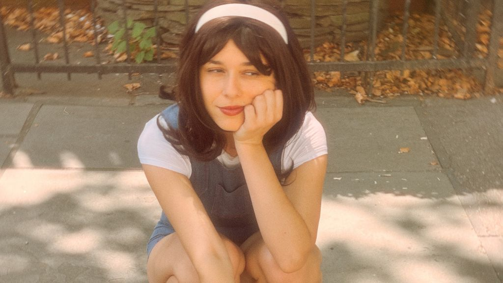

Anaïs & The Hoops Finds Her Voice in Growing Pains

Anaïs & The Hoops, a newly risen star from Brooklyn, is here with the release of her EP, Growing Pains, out on all streaming platforms today. With Growing Pains, Anaïs takes her signature blend of indie pop, jazz, and folk, carrying it in a collection of nostalgia, playfulness, and pure energy.
For three years, Anaïs had worked on the six-song EP. After some time, she engaged Ben Coleman in the production, along with collaborators from the band and fellow New York musicians, so that each track would bear a particular collaborative flair. The spirit of togetherness even extended outside the immediate band, with her mom helping out in refining the lyrics for Anaïs's first-ever French-language piece, "Passe le temps"; meanwhile, a poem by her friend Alex Brady is incorporated into the track "Cool." "It's been fun to cobble together," she shares. "Basically, every song was touched by someone in or around the live band."
Identity, nostalgia, and self-discovery are themes Anaïs continues to delve into on Growing Pains. The songs capture the struggle of growing up while still wanting to clutch onto that kid who used to be. "These songs were some of the first I wrote that truly felt like me," says Anaïs. "Most of these songs came together after I moved from Californ..."
The record comprises six tracks that feel deceptively warm and sincere, somewhere between indie pop, touches of jazz, and subtly inflected with folk, the kind of record one can almost touch, almost live with. Each track drops a shade into a different memory.
In the time since her streaming footprint has been widening and social following mounting, Anaïs has built much repute as a highly magnetic live act. She has sold out her own headline shows, played at NXNE Music Festival in Toronto, and opened for the likes of Jade Bird and Thunder Jackson.
Anaïs & The Hoops is the project of Brooklyn-based, San Diego-raised singer and songwriter Anaïs Lund. She got her start performing in jazz clubs and restaurants before finding her own musical footing in 2019, when she began writing the songs that would shape her project, Anaïs & The Hoops. With her jazz-inflected vocals, sharp yet vulnerable lyrics, catchy pop melodies, and a captivating retro aesthetic, Anaïs & The Hoops is quickly establishing herself as one of indie music’s most distinctive new voices.
A different release, full of surprises and unique elements taken from albums we love, with so many interesting influences in the sound. It is a unique jazz creation with exceptional vocals and a tremendous rhythm. The instruments resemble a well-oiled machine with a steady rhythm and precision of movement, which nevertheless sounds so natural and beautiful.
The end result is a beautiful accompaniment of musical calls that flatter Anaïs' voice with a beautiful mix of different sounds, even including a guitar with light fuzz. If we had to describe this release, we would say that it is a breath of fresh air, especially in an era of fast songs and hits aimed at immediate recognition and artistic popularity. A breath of fresh air born from a band that knows jazz and music in general.
Follow our playlist for more songs, albums and new releases
This dispatch was last updated on September 11, 2025